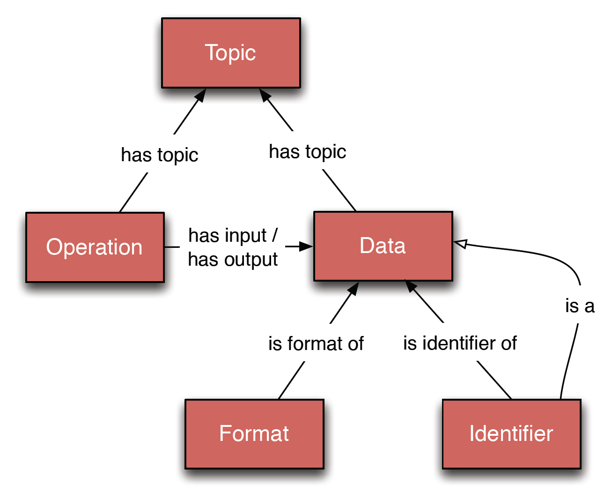

Bioinformaticians handle an increasingly large and diverse set of tools and data. Meanwhile, researchers demand ever more powerful and convenient means to organise, find, understand, compare, select, use and connect the available resources. These tasks often rely on consistent, machine-understandable descriptions of the underlying components, but these have been generally lacking in ad hoc resource descriptions. The urgent need - filled by EDAM - is for an ontology that unifies semantically the bioinformatics concepts in common use, provides the curator with a comprehensive controlled vocabulary that is broadly applicable, and supports new and powerful search, browse and query functions.
EDAM (originally from “EMBRACE Data and Methods”) is an ontology of well established, familiar concepts that are prevalent within bioinformatics, including types of data and data identifiers, data formats, operations and topics. EDAM is a simple ontology - essentially a set of terms with synonyms and definitions - organised into an intuitive hierarchy for convenient use by curators, software developers and end-users.
EDAM is suitable for large-scale semantic annotations and categorization of diverse bioinformatics resources, including:
EDAM is also suitable for diverse application including for example within workbenches and workflow-management systems, software distributions, and resource registries. Examples of existing implementations are listed at the end of this document.
EDAM includes 4 main sub-ontologies or 'branches' of concepts:
Noteworthy within the Data sub-ontology is:

Figure 1. The EDAM concepts. Boxes indicate top-level concepts (sub-ontologies or 'branches'), with a couple of specific concepts exemplified.
As a general rule, the Data, Format, and Operation branches include concepts strictly in domain of bioinformatics and computational biology: concepts purely concerning biology, computer science, etc. are not included. The Topic branch, however, includes broader inter-disciplinary concepts from the biological and medical domains.
EDAM provides different semantic 'axes' for annotation. For example, annotation of a software tool might include:
EDAM strives to uphold a few founding principles including:
EDAM is working towards implementing these principles fully and is open to suggestions.
EDAM has 3 components:
Figure 2. The EDAM architecture is intentionally simple. Boxes indicate top-level concepts (sub-ontologies), and lines indicate types of relations that are maintained between concepts in EDAM.
Version 1.9 of EDAM has been released. Contributions and suggestions are welcome!
Locations for download in OWL format:
http://edamontology.org/EDAM.owl (Always points to the last stable version)
Locations for download in OBO format:
http://edamontology.org/EDAM.obo (Always points to the last stable version in OBO format. OBO-format version lacks certain details.)
Please note that the last stable version of EDAM available in OBO format was version 1.2. Because the conversion from OWL to OBO hasn't yet fully been automated for EDAM, we will only resume providing OBO format in case of substantial demand or full automation of the conversion.
All versions:
https://github.com/edamontology/edamontology/releases
The edamontology.org site provides content negotiation with respect to the desired media type (i.e. format, e.g. HTML, OWL, etc.). This applies also to the URIs of EDAM concepts that are in this way dereferencable, concise, and stable. Alternatively to requesting the format in the HTTP header, users can retrieve the desired content from a web browser by inserting ?format=<desiredformat> query into the URL.
EDAM is being actively developed:
The development of EDAM can be followed at GitHub. For the ways to contribute, please read further below.
EDAM is available in the following Web-based ontology browsers:
EDAM is described in the following article. If you use EDAM or its part, please reference:
Ison, J., Kalaš, M., Jonassen, I., Bolser, D., Uludag, M., McWilliam, H., Malone, J., Lopez, R., Pettifer, S. and Rice, P. (2013). EDAM: an ontology of bioinformatics operations, types of data and identifiers, topics and formats. Bioinformatics, 29, 1325-1332.
doi: 10.1093/bioinformatics/btt113 PMID: 23479348
The article is freely available (Open Access).

EDAM (a.k.a. the EDAM ontology) is licensed under a Creative Commons Attribution-ShareAlike 4.0 International License (CC BY-SA 4.0).
We recommend, however, that while EDAM is being actively maintained by its authors, substantial derived work, major modifications (especially conceptual and semantic), and re-definitions of concepts and other content (e.g. additional constraints on EDAM concepts/owl:Class-es within owl:imports meant with universal validity, that would "close" some desired options of the open-world assumption) are consulted with the EDAM core developers beforehand at the time of consideration, and consistent solutions are sought in collaboration.
Our core priority is to be responsive to users of EDAM. Furthermore, to establish a more sustainable footing for essential EDAM maintenance and developments, including:
EDAM follows a 'gatekeeper' model with 4 tiers of governance:
1. EDAM Advisory Board - has the purpose of advising the EDAM core developers on how best to uphold the EDAM principles and achieve its current aims. It will include people with diverse skills, experience and expertise. Advisory Board members have no formal responsibilities, but are expected to advocate EDAM and actively offer frank and constructive advice on scientific, technical and strategic issues. The EDAM Core Developers will respect the advice and give quarterly updates on progress via the edamontology-advisory mailing list. The Core Developers would aim to assemble with the Advisory Board virtually 2 or 3 times a year or as circumstances dictate, in meetings with open agenda and be followed up with actions and notes on key recommendations. The Advisory Board will be reconstituted each year and the core developers reserve the right to drop inactive members. Members of the Advisory Board who are committing resources to EDAM may elect to serve on the EDAM Steering Board which has 3 primary responsibilities: 1) Help the EDAM Core Developers to make strategic decisions. 2) Verify whether stated aims and actions are coherent and wise. 3) Monitor progress and provide feedback. 4) Help seek funding for EDAM.
2. EDAM Core Developers - have GitHub commit rights. Responsible for agreeing strategy and tactics, setting priorities, overseeing and approving developments and routine maintenance. Quasi-democratic with a 'gatekeeper' (Jon Ison by default) having the final say. The gatekeeper may be temporarily appointed from the core developers as necessary, e.g. during holidays. Core Developers must have the intent and some bandwidth to develop EDAM in the long-term. They have 3 primary responsibilities: 1) Understand and uphold the EDAM principles. 2) Advocate EDAM. 3) Develop EDAM as bandwidth permits.
3. Developers - may have temporary 'core developer' status as convenient, but would not normally have GitHub commit rights long-term. They include anyone who makes significant technical or scientific contributions, by whatever means, but have none of the commitments or responsibilities of the core developers.
4. Other contributors - do not have GitHub commit rights, but can still make comments, contribute suggestions for new terms and other changes.
Please direct all enquiries to the mailing lists: EDAM core developers by default, or EDAM discussion in case the issue needs a discussion within the community of EDAM users and contributors.
Thanks for valuable discussions and contributions to Peter Rice, Inge Jonassen, Dan Bolser, Rodrigo Lopez, Gert Vriend, Steve Pettifer, Hamish McWilliam, Alan Bleasby, Mahmut Uludag, László Kaján and others.
EDAM Core Developers: Jon Ison, Matúš Kalaš, Hervé Ménager.
Feel free to subscribe to the mailing lists:
Once subscribed, you can mail the edam list:
edam-announce is for announcements (very minimal traffic!), while edam is for discussions around the use of EDAM and its concepts.
"A function or process performed by a tool; what is done, but not (typically) how or in what context."
e.g. "Sequence alignment", "Pairwise sequence alignment", "Sequence database search".
"Operation" concepts provide mostly fine-grained concepts for annotation of tool functions.
The top-level concepts are:
The top-level operations are necessarily coarse-grained (abstract) providing a navigable top-level. They serve as placeholders for other, more specific concepts lower down in the tree.
"A type of data in common use in bioinformatics."
e.g. "Sequence alignment", "Comparison matrix", "Phylogenetic tree" etc.
Data concepts:
The top-level concepts are:
Their meaning is:
Concepts within "Core data" are:
"A general bioinformatics subject or category, such as a field of study, data, processing, analysis or technology."
e.g. "Sequence analysis", "Alignment", "Sequencing", "Microarrays".
"Topic" concepts provide coarse-grained categories for annotation of diverse bioinformatics resources. They do not cover biology or computer science exhaustively.
The top-level concepts are:
"A specific layout for encoding a specific type of data in a computer file or memory."
e.g. "FASTA format", "PDB format", "mmCIF" etc.
"Format" concepts:
The top-level concepts are:
All concepts are nested under "Binary format", "Textual format" and "XML", with exception of pure "HTML" or "RDF" (and "BioPAX"). The "Format (typed)" branch arranges formats by type of data and provides an additional axis over (the same set of) concepts under "Binary format", "Textual format" and "XML".
"A label that identifies (typically uniquely) something such as data, a resource or a biological entity."
e.g. "UniProt accession", "EC number", "Gene symbol" etc.
"Identifier" concepts:
The top-level concepts are:
As for "Format", the "Identifier (typed)" branch provides an additional axis over (the same set of) concepts under "Accession" and "Name".
Defines a concept as a specialisation of another concept. If A is a B, then A is a specialisation of B, and B is a generalisation of A.
The is a relation is transitive: if A is a B and B is a C then A is a C.
All relations are transitive over is a: e.g. if A has input B and B is a C then A has input C, and if A is a B and B has input C then A has input C.
e.g. "Pairwise sequence alignment" is a "Sequence alignment"
Defines an "Operation" concept as reading (inputting) a "Data" concept.
e.g. "Sequence alignment construction" has input "Sequence"
Defines an "Operation" concept as writing (outputting) a "Data" concept.
e.g. "Sequence alignment construction" has output "Sequence alignment"
Defines a "Data" or "Operation" concept as being within the scope of a "Topic" concept.
e.g. "PolyA signal identification" has topic "Nucleic acid sequence analysis"
Defines that an "Identifier" concept identifies a "Data" concept.
e.g. "Sequence accession number" is identifier of "Sequence"
Defines that a "Format" concept is the format of a "Data" concept.
e.g. "Sequence format" is format of "Sequence record"
Rules define how concepts are related.
... a specialisation of a topic.
... a specialisation of an operation.
... inputs a type of data.
... outputs a type of data.
... within a topic.
... a specialisation of a type of data.
... within a topic.
... a specialisation of a data format.
... a format specification of a datatype.
... identifier of a datatype.
Various resources were analysed while constructing EDAM and were used as sources listing common bioinformatics concepts in scope.
Annotators may email EDAM developers for help.
The expectation is for EDAM to be used alongside other ontologies for annotation where possible and desirable. For example, an operation that predicts specific features of a molecular sequence could be annotated with concepts from SO (Sequence Ontology) for the features.
If you have many annotations to do, it will help to familiarise yourself with EDAM first using a browser (see Viewing).
A Web service is considered as an arbitrary (but usually related) set of one or more operations, reducing the problem of Web service interoperation to one of compatibility between operations.
Operation
Input
Output
XML elements
Annotation of a WSDL file or associated XSD schema is possible at several levels. Assuming SAWSDL annotation (http://www.w3.org/TR/sawsdl/), the XML elements that may be annotated by EDAM concepts are:
NB. The input and output parameters should be annotated inside the XML Schema that defines them. In case of services that are not following the highly recommended document/literal wrapped SOAP-binding style, the <wsdl:part> inside <wsdl:message> can be annotated (the same applies to faults, but meanings of faults are not modelled by EDAM)
The following annotations might be useful but are not directly recommended by SAWSDL:
For details of incorporating the SAWSDL annotations into WSDLs and XSDs, see EDAM URIs and SAWSDL annotation.
SAWSDL mandates the use of sawsdl:modelReference attributes for annotation. The format of EDAM URIs used inside this attribute includes the ontology name (http://edamontology.org), main sub-ontology, and the unique identifier (ID) of the particular concept:
<xs:element name="elementName" sawsdl:modelReference="http://edamontology.org/subontology_id">
Where ...
The value of the sawsdl:modelReference attribute is a URI pointing to the concept definition. The URI to use is in case of EDAM includes the concept's sub-ontology:
So for these 3 concepts:
EDAM_topic:0182 EDAM_operation:0292 EDAM_data:0863
We'd have
http://edamontology.org/topic_0182 http://edamontology.org/operation_0292 http://edamontology.org/data_0863
Which can be used in SAWSDL annotation, e.g.
<wsdl:portType name="myService" sawsdl:modelReference="http://edamontology.org/topic_0182"> <sawsdl:attrExtension sawsdl:modelReference="http://edamontology.org/operation_0292> <xs:element name="outfile" sawsdl:modelReference="http://edamontology.org/data_0863>
If more than one annotation of an element is required, these can be given in the sawsdl:modelReference attribute delimited by space characters:
<wsdl:portType name="myService" sawsdl:modelReference="http://edamontology.org/topic_0182 http://edamontology.org/operation_0292">
NB. Such multiple annotations need not be in the same namespace, and need not at all to refer to the same ontology.
One peculiarity of the SAWSDL specification is that annotations on <wsdl:operation> element inside <wsdl:portType> should be handled using a <sawsdl:attrExtensions> element. This is not a requirement for other elements.
Importantly, the <sawsdl:attrExtension> element inside the wsdl:operation must be before <wsdl:input>, <wsdl:output> and <wsdl:fault> elements (so typically after the <wsdl:documentation> element).
For example:
<wsdl:portType name="Clustalw2PortType" sawsdl:modelReference="http://edamontology.org/topic_0186 http://edamontology.org/operation_0496"> <wsdl:operation name="submitClustalw2"> <wsdl:documentation>Submit a sequence and get a jobID</wsdl:documentation> <sawsdl:attrExtensions sawsdl:modelReference="http://edamontology.org/operation_0496"/> <wsdl:input message="submitClustalw2Msg"/> <wsdl:output message="submitClustalw2ResponseMsg"/> </wsdl:operation>
Some WSDL/XSD validators or SOAP libraries do not check for it, but some do require the strict order of these elements.
EDAM is a community project, and suggestions for additions, corrections, and other improvements are always welcome. There are 3 ways to contribute suggestions:
Straightforward requests for one or a few changes can be made straight away on the EDAM Change Request form:
http://tinyurl.com/EDAMChangeRequest
Requests for many new concepts should, however, first be discussed with the EDAM core developers:
If you agree with the EDAM core developers on substantial additions or other changes and are funded for such developments, we are open to you becoming a temporary EDAM core developer. In any case, we will work with you to find the most efficient way to proceed, depending on your requirements, expertise and bandwidth.
We will make every effort to be responsive to your requests, given our limited resources.
When requesting a new concept:
For a low-traffic mailing list for announcements about the EDAM ontology, subscribe to edam-announce:
http://elixirmail.cbs.dtu.dk/mailman/listinfo/edam-announce
The is the preferred way to make suggestions that require some discussion is via the edam mailing list. Please subscribe:
http://elixirmail.cbs.dtu.dk/mailman/listinfo/edam
To post to the list, mail:
You can use the same list for discussions around the use of EDAM concepts, i.e. for purposes of resource annotation and in software implementations.
The GitHub issue tracker can be used to submit issues for which, for whatever reason, you want a public record: we prefer it is not used for any other purpose.
To open a GitHub issue you must have a GitHub account, and follow these simple steps:
NB.! The workflow for the core and appointed developers of EDAM is documented in HOW_TO_EDIT.md inside the EDAM GitHub project.
EMBOSS applications have been annotated using EDAM and these annotations appear in corresponding Web services.
Annotated WSDL files (and associated XSD data schema) are available from:
You will see a list of service end-points with WSDL URLs. For example:
To see the data schema associated with a WSDL, you must replace "?wsdl" with "?xsd=1", "?xsd=2" or "?xsd=3". For example:
The BioXSD XML schema (XSD) defines exchange formats of everyday bioinformatics data types. BioXSD aims to serve as the common, canonical data model for bioinformatics Web services. It includes commonly used types including sequences, sequence annotations, alignments and references to resources:
BioXSD has been annotated with EDAM concepts.
A catalogue of data resources (DRCAT) is being compiled as part of the EMBOSS project. Each entry in DRCAT gives metadata on a data resource available on the Web. The metadata includes "Query" lines describe the type(s) of data available, the data format, data identifier (used to query) and a URL from which data can be retrieved. The "Query" lines and the resources themselves are annotated with EDAM concepts.
A typical entry is shown below:
(NB. The format of EDAM ids has not been upgraded yet. Will be done asap.)
ID PDB Acc DB-0070 Name The RCSB Protein Data Bank Desc A repository for 3D biological macromolecular structure data. URL http://www.rcsb.org/pdb/ Cat 3D structure databases EDAMres EDAM:0000693 | Tertiary structure EDAMdat EDAM:0000883 | Tertiary structure EDAMdat EDAM:0002085 | Structure annotation EDAMfmt EDAM:0001476 | pdb EDAMfmt EDAM:0001478 | pdbml EDAMfmt EDAM:0001477 | mmCIF EDAMfmt EDAM:0002331 | HTML EDAMid EDAM:0001127 | PDB ID Xref SP_explicit | None Xref SP_FT | None Xref EMBL_explicit | None Query EDAM:0002085 | EDAM:0002331 | EDAM:0001127 | http://www.pdb.org/pdb/explore/explore.do?structureId=%s Query EDAM:0000693 | EDAM:0001476 | EDAM:0001127 | http://www.pdb.org/pdb/files/%s.pdb Query EDAM:0000693 | EDAM:0001477 | EDAM:0001127 | http://www.pdb.org/pdb/files/%s.cif Query EDAM:0000693 | EDAM:0001478 | EDAM:0001127 | http://www.pdb.org/pdb/files/%s.xml Example EDAM:0001127 | 1rbp Email deposit@deposit.rcsb.org CCmisc EMBL DR line example "1OSN", /dbxref="PDB:12GS" Status Referenced
DRCAT development will proceed in harmony with bioDBCore, which proposes a community-defined, uniform, generic description of the core attributes of biological databases:
bioDBCore is under the auspices of the International Society for Biocuration:
All enquiries to Jon Ison or EDAM developers.
Bio-jETI allows automatic composition of functional units into software systems according to higher-level specifications using EDAM:
The iHOP Web service is annotated with EDAM concepts, either directly or via its use of BioXSD:
The Web services provided by the Computational Biology Unit (CBU) of the University of Bergen and its affiliated Uni Computing are annotated with EDAM concepts:
eSysbio was a proof-of-concept prototype workbench for sharing and analysing bioinformatics data using public or private Web services and R scripts. eSysbio used EDAM to annotate and denote the type and format of data items submitted to the system.
The SEQanswers wiki is an open catalogue of bioinformatics software tools, non-exclusively focussed on sequencing data analysis. SEQanswers tool wiki uses EDAM for annotation of the listed tools where applicable.
Last update: 2015-Apr-30